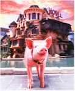
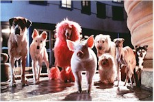

Think Pink "it was love at first sight" and you hum a few bars from the Aerosmith hit. A worldwide audience also took that pigment to heart as defined by 1995’s barnyard delight Babe, now a video staple and spawn to a new calamitous adventure. Our pint-sized porcine star is back in a semi-dark, semi-sweet sequel from director George Mad Max Miller (who co-produced and co-wrote the original), and plays up the animal creed that "a kind and steady heart can mend a sorry world." Actress/Singer/Songwriter E.G. Daily picks up vocal chores for Babe (replacing fellow Rugrat Christine Cavanaugh), in a seamless transition. And while the film isn’t as lighthearted as the original, the film is certainly a babe-o-licious helping of ham on wry.

Regrettably, Pig in the City appears headed for the video sell-off gutter ball of fame for distributor Universal (which took an unfortunate marketing gamble opening this opposite A Bug’s Life). The Big U had a less-than-stellar opening for Meet Joe Black a few weeks back and if things don’t change with its upcoming Psycho, I wouldn’t want to shower with any of the studio brass this holiday season. It didn’t help matters when the film’s Hollywood charity premiere was cancelled at the last minute purportedly due to animatronic tinkering and subsequent rumors of the film having a too dark tone. Fighting against prevailing currents -- this is nowhere close to the nihilism found in Batman Return -- even if false, appear to have drowned this film before it has a chance to catch its second breath. I caught the film’s first screening on Thanksgiving Saturday and the smallish crowd of 50 or so was split evenly among adults and children. Of the six screens in the multiplex, Disney/Pixar’s animated ants invaded two, with Babe caged up in a single, small sty. Alas, this little piggy gem will be crying all the way home.Most of Babe’s farmyard friends are left behind for this Orwellian journey, which starts with a joyous welcome home parade following Babe’s success at the sheep dog competition. The puzzled crowd looks skyward to the "ham" being sketched by a plane. A bad omen perhaps? No, just the first of many sly visual gags sprinkled in the witty script by Miller, Judy Morris, and Mark Lamprell. A second glance up shows the added "c" and "p" to each end of the word. But,
as Roscoe Lee Browne’s deep baritone narration warns, "fate turns on a moment," and the pig’s prying snout throws Farmer Hodgett (James Cromwell) down a well and the farm to the brink of insolvency, thus forcing the farmer’s portly and sympathetic wife Esme (Magda Szubanski) on a quest to restore the family’s finances. This seems to be one of the film’s few problems: all those adorable farm critters are basically reduced to a walk-ons. The new "cast" does a fine job, but the cute is cut to the bone and we’re left with a wise-cracking, city-smart menagerie that isn’t as endearing as the originals. The human cast gets short shrift as well, at the expense of the technically embellished animals, and writing out the farmer other than an occasional "That’ll do pig," was a mistake.
And so it is that dear Mrs. Hodgett and her piggish cargo embark for a paying gig before getting sidetracked by an over-anxious D.E.A. drug-sniffing dog in a show of bark force. Stuck in Metropolis, they find their way to the Flealands Hotel, production designer Roger Ford’s marvelously unbalanced slant on Animal Farm and the Bates Motel, with a touch of Norma Desmond thrown in for good measure.

When Esme gets lost for a good portion of the film (jailed after a Rube Goldberg sequence gets her drenched in glue), the creature-loving landlady (Mary Stein) and her disheveled uncle Fugly Floom (Mickey Rooney), a magic clown, pick up the slack. They play house to a family of circus chimps including bubblegum popping Bob (comedian Steven Wright) and his over-accessorized, pregnant mate Zootie (Glenne Headly), a Capuchin monkey, with the somber orangutan Thelonius Monk (James Cosmo, phoning in his lines by ISDN connection!) towering over his friends with a silent, judicial grace. Other guests include a room-full of singing cats, a Neapolitan Mastiff, and his English Bulldog companion. A ton of strays, some vicious, some pink (but way short of being considered Conradian), fill up the remainder of the supporting roles. Kudos to the hundreds of special effects artists who make the real and fake blend with a wonderful gleefulness, although Ferdinand the Duck (afforded some short flight time by holdover Danny Mann) appears wooden in most of his scenes. Our three adorable mice minstrels are back, singing "Non, Je Ne Regrette Rien," "That’s Amore," and "Are You Lonesome Tonight?"The cityscape is a successful and crazed amalgam of Venice (the Italian canals and the California beach), with a skyline that begs to be examined for, perhaps, a hidden R2D2. Among the sights glimpsed from Babe’s hotel window: the Sydney Opera House, the Statue of Liberty, the Eiffel Tower, the Hollywood sign, the Space Needle, and the Golden Gate Bridge. Someone’s having a lot of fun here!
As the film winds towards an outlandish, bouncing conclusion, Esme comes out swinging (from a chandelier) in Uncle Fugly’s clown suit. Babe and Mrs. Hodgett reunite and beat a hasty retreat (with a few city-weary recruits) to the safety of their farm, and the narration quickly explains away their financial predicament.
Babe: Pig in the City has a few rough edges, but it’s worth a visit. It may not be as fresh as its predecessor, it still begs a look-see. As the year winds down, this is one fine holiday ham that should be savored, not skinned.